如何建立 Nginx 反向代理到 Node.js

一般来说把 Node.js 运行在生产环境中，会在其上层添加一层 nginx 作为负载均衡，然后反向代理到运行的 Node.js 服务器上(如下图)。 例如，Node.js 运行在3000端口： var server = app.listen(3000, function() { console.log('Listening on...阅读更多

一般来说把 Node.js 运行在生产环境中，会在其上层添加一层 nginx 作为负载均衡，然后反向代理到运行的 Node.js 服务器上(如下图)。 例如，Node.js 运行在3000端口： var server = app.listen(3000, function() { console.log('Listening on...阅读更多